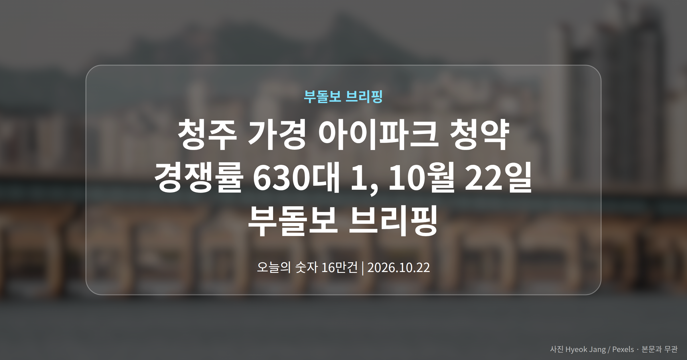
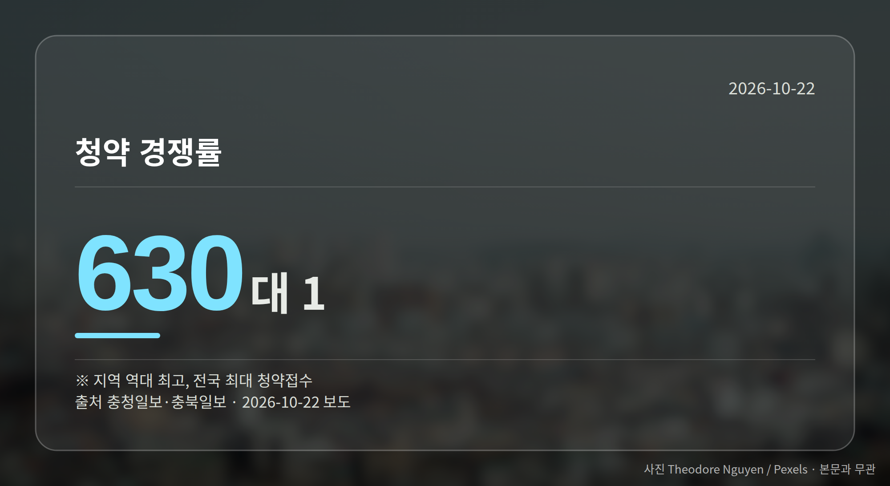
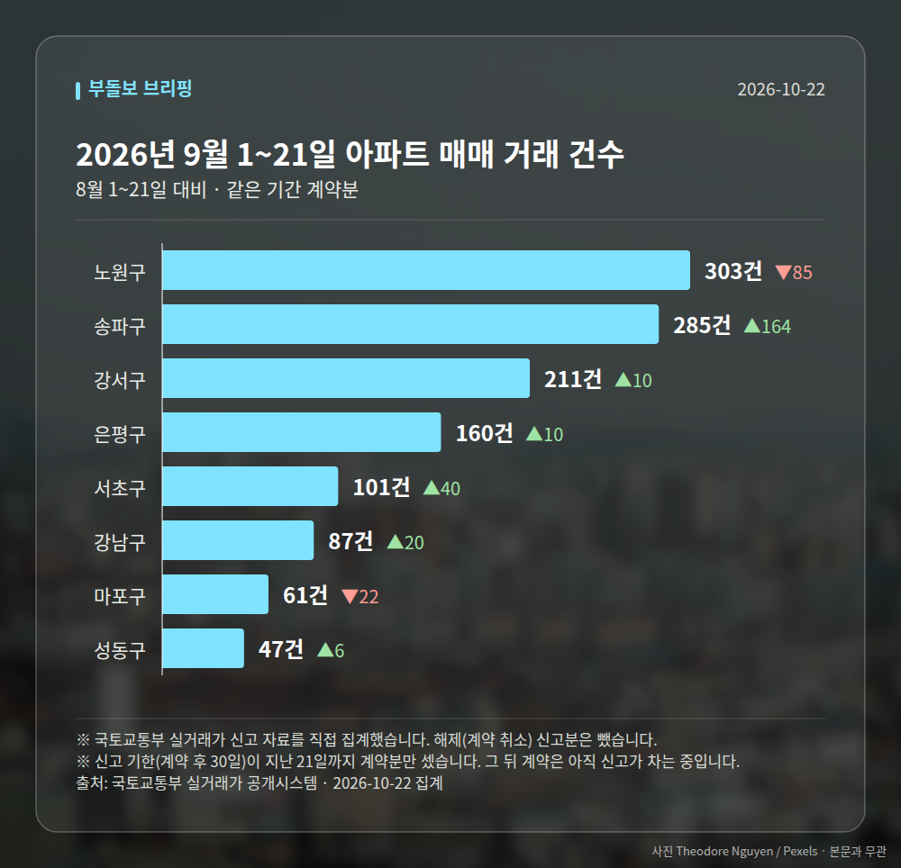

이 글은 2026년 10월 22일 기준으로 정리한 내용입니다. 실거래 거래 건수는 2026년 9월 1~21일 계약분(신고 기한이 지난 것), 전세가율 등은 2026년 8월 신고분입니다.
청주 가경 아이파크 청약에 수요가 한꺼번에 몰렸습니다. 경쟁률은 630대 1로 지역 역대 최고치를 경신했다는 보도가 나왔습니다.
다만 접수 건수는 매체마다 달라, 정확한 규모는 공식 집계로 다시 확인할 필요가 있습니다. 오늘은 이 소식을 중심으로 정리해 드립니다.

청주 가경 아이파크 7·8단지에 신청이 대거 접수됐습니다. 충청일보와 충북일보는 경쟁률 630대 1로 지역 역대 최고라고 전했습니다.
접수 건수는 매체별로 차이가 있습니다. 서울경제는 1순위 청약 15만 건으로 올해 전국 최다라고 보도했고, 충청매일은 전체 16만 건이 몰렸다고 전했습니다.
| 항목 | 수치 | 보도 매체 |
|---|---|---|
| 청약 접수 건수 | 16만건 | 충청매일 |
| 1순위 청약 접수 건수 | 15만건 | 서울경제 |
| 청약 경쟁률 | 630대 1 | 충청일보·충북일보 |
충북일보는 이를 전국 최대 청약접수 기록이라고 설명했습니다. 한국경제는 이 단지가 '아이파크 타운'의 마지막 분양이라고 보도했습니다.
지방 분양시장에서도 특정 단지로 수요가 쏠리는 흐름이 뚜렷하다는 신호로 읽힙니다. 수도권만의 이야기가 아니라는 점이 눈에 띕니다.
다만 앞서 본 접수 건수가 매체별로 엇갈립니다. 여러분이 청주 가경 아이파크 청약 결과를 참고하신다면, 한국부동산원 청약홈 등 공식 집계를 기준으로 삼는 편이 안전합니다.
또한 이 경쟁률이 청주 전역의 분위기를 그대로 보여주는지는 자료만으로 단정하기 어렵습니다. 특정 단지에 집중된 수요일 가능성도 함께 열어 두어야 합니다.
내일은 계양신도시 카이브 유보라와 상업시설 '시간' 견본주택 개관이 예정돼 있습니다. 분양가와 청약 일정은 아직 자료에 제시되지 않아, 현장에서 확인하시는 것이 좋겠습니다.
서울 8개 구에서 계약된 매매는 1255건입니다. 8월 1~21일 1112건과 견주면 +143건입니다.
거래가 많은 곳: 노원구 303건(-85) · 송파구 285건(+164) · 강서구 211건(+10)
신고 기한(계약 후 30일)이 지난 21일까지 계약분끼리 견줬습니다.
노원구 전세가율(전세 보증금 ÷ 매매가)은 가운뎃값 52.9%입니다. 같은 단지·같은 면적 107곳을 견줬습니다.
서울 25개 구 가운데 거래가 가장 크게 움직인 곳: 송파구 +135.5%(121→285건, 장지동에 64.9% 몰림) · 서초구 +65.6%(61→101건, 서초동에 45.5% 몰림)
2026년 9~10월 계약 신고가

→ 그림 파일 img-stats-volume.png 을 이 자리에 올리세요
국토교통부 실거래가 신고 자료를 직접 집계했습니다. 해제(계약 취소) 신고분은 뺐습니다.
여러분이 지금 청약을 준비하는 지역은 공급이 이어지는 곳인가요, 아니면 이번이 거의 마지막 물량인 곳인가요?
댓글로 알려 주시면 다음 글에 반영하겠습니다.